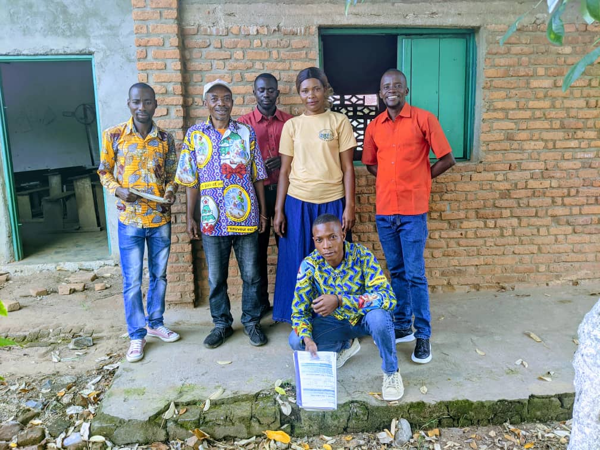

À Propos de DIEF
Qui sommes-nous ?
Le DEVELOPPEMENT INTEGRAL DE L’ENFANT ET DE LA FEMME, DIEF-RDC en sigle, est une association féminine non gouvernementale de droits congolais indépendante et apolitique. Elle a été créée dans le but de combattre en RD Congo les inégalités, les exclusions, la torture et autres peines ou traitements cruels, inhumains ou dégradants commis aux enfants et aux femmes.
Notre Vision
Notre vision est de voir la communauté être le principal acteur de son développement à travers les actions concrètes de DIEF pour répondre aux différents problèmes d’ordre humanitaire que traversent les enfants et les femmes causés par les conflits, les déplacements, les catastrophes naturelles et les épidémies avec comme conséquences des graves violations des droits de l’enfant et de la femme. Le DIEF vise à apporter des approches participatives et inclusives afin d’apporter des solutions atténuantes à ces problèmes.
Nos Objectifs
- Contribuer à la promotion et à la protection des droits humains, de la paix et des facteurs de croissance économique pour un développement durable des êtres.
- Renforcer l’assurance, la protection et l’éducation des enfants ainsi que la gouvernance, paix et transformation des conflits dans les communautés des zones d’intervention en RDC.
- Contribuer à la réduction du taux de malnutrition de 10 % chez les enfants de moins de 5 ans et les femmes enceintes et allaitantes (FEFA) à travers des activités de prévention, prise en charge et d’accès de la population aux abri, à l’eau, l’hygiène et assainissement.
- Contribuer à la protection de l’environnement à travers les interventions agricoles et en promouvant les mécanismes préventifs de catastrophes naturelles liées au changement climatique.
- Promouvoir les droits humains, le genre et le leadership féminin.
- Contribuer à la résolution et gestion non-violente des conflits dans des communautés affectées par divers différends.
- Autonomiser les femmes vulnérables et les jeunes à travers la politique nationale de réinsertion socio-économique.
- Appuyer techniquement et matériellement les initiatives (actions) communautaires en vue de renforcer la cohésion sociale, et l’autonomisation des personnes vulnérables.
Zones d'Intervention
Compte tenu des moyens disponibles, DIEF intervient prioritairement dans les trois provinces du: Sud-Kivu Nord-Kivu et Maniema.
Notre Staff

Mme NABINDU BIGOSE Gentille
Coordinatrice nationale
Chef de programme
Resource humaine et logistique
Admin Finance
Chargé de parténariat
Chef de Base Uvira
Photo d'ensemble avec les enseignant de l'école primaire ruzizi après sensibilisation en VBG
